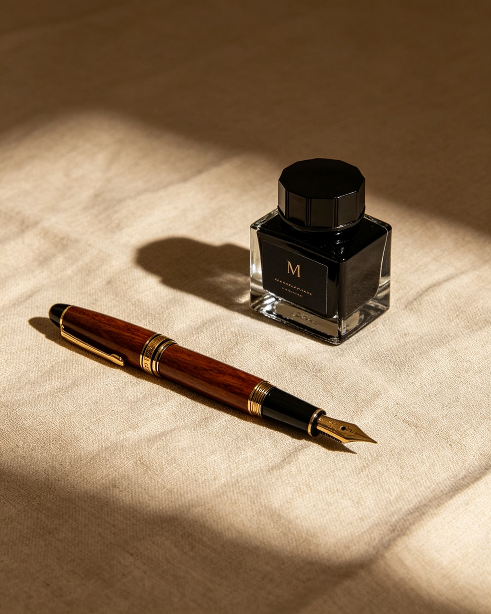

本期特稿

我们读书，是为了知道自己并不孤单。那些在深夜里无法说出口的感受，早有人写在了某一页纸上。
—— 阿尔贝·加缪《置身于苦难与阳光之间》
在字里行间寻找另一个自己 · 加入 328 天
我们生活在一个被信息填满的时代。每天清晨醒来，手机屏幕上已经堆积了上百条未读消息、新闻推送和社交媒体更新。我们的注意力被切割成无数碎片，而深度阅读——那种需要沉浸、需要耐心、需要与文字长时间共处的阅读——正在变得越来越稀有。
但也许正是因为稀有，它才显得更加珍贵。一本书不会因为你读得慢而贬值，反而会因为你愿意停下来反复咀嚼某一个段落，而在你的记忆里留下更深的印记。缓慢不是效率的敌人，而是理解的前提。
在接下来的篇幅里，我想和你聊聊：如何在这个加速的世界里，为自己保留一块缓慢阅读的领地。这不是一场怀旧的仪式，而是一种清醒的选择——选择不被信息流裹挟，选择让自己的思考有足够的时间沉淀。